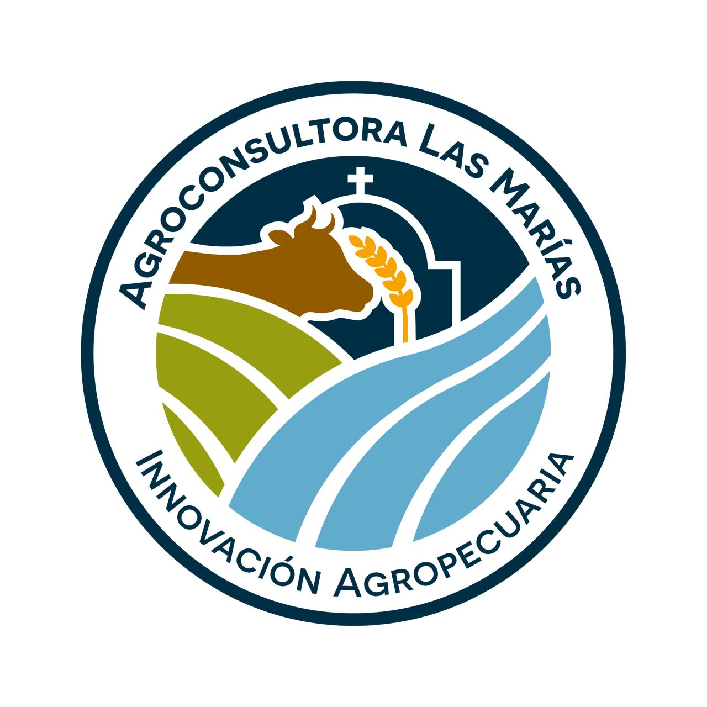

Combinamos experiencia de campo, datos y tecnología para que cada decisión productiva sea más rentable, sustentable y previsible.

Un mismo equipo que entiende el negocio de punta a punta: del lote a la gestión, del suelo a la rentabilidad.
Ambientación de lotes, mapas de rendimiento y prescripciones variables para sembrar y fertilizar donde más rinde.
Planes de nutrición, sanidad y recría para mejorar índices productivos y la eficiencia de conversión del rodeo.
Diagnóstico de fertilidad, análisis de suelo y estrategias de nutrición para cuidar el capital productivo a largo plazo.
Rotaciones, planteos técnicos y presupuestos de campaña que ordenan la producción y anticipan resultados.
Indicadores, tableros y seguimiento de costos para tomar decisiones con números claros en cada etapa.
Prácticas que cuidan el ambiente y suman valor: manejo responsable de insumos, agua y biodiversidad del campo.
Profesionales que combinan trayectoria de campo con formación técnica para acompañar a cada empresa productora.
Consultor agropecuario independiente desde 1996. Máster en Ciencias del Suelo (UBA) y trayectoria en AAPRESID. Especialista en agronomía y protección de cultivos.
LinkedInConsultor privado desde 2012 y regente técnico en la Cooperativa Agrícola Conesa. Ingeniero Agrónomo (UNR) y MBA en Agronegocios (Universidad Austral), con base en San Nicolás.
LinkedIn30 años en agricultura de precisión y optimización productiva en toda Latinoamérica. Especialista en rentabilidad por hectárea y decisiones basadas en datos. Hoy Director de Operaciones de VERION Agricultura en Perú.
LinkedInCoordinamos una primera charla sin cargo para entender tu situación productiva y cómo podemos ayudarte a producir mejor.
Escribinos por WhatsApp